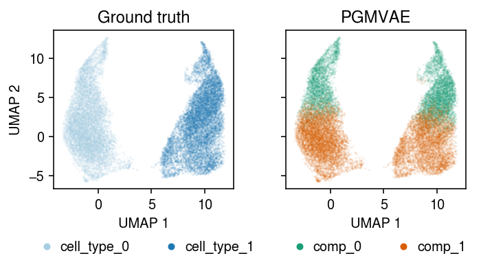
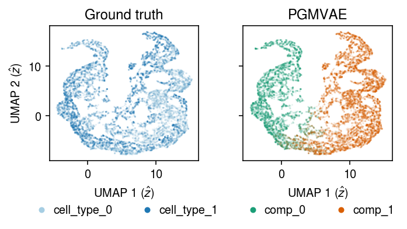

Deep unsupervised clustering of scRNA-seq data
Table of Contents
Introduction
Two major strategies for clustering scRNA-seq data are:
- Building a \(k\)-nearest neighbor graph on the data, and applying a community detection algorithm (e.g., Blondel et al. 2008, Traag et al. 2018)
- Fitting a topic model to the data (e.g., Dey et al. 2017, Gonzáles-Blas et al. 2019)
The main disadvantage of strategy (1) is that, as commonly applied to transformed counts, it does not separate measurement error and biological variation of interest. The main disadvantage of strategy (2) is that it does not account for transcriptional noise (Raj 2008). We previously developed a simple mixture model which could address this issue. Here, we develop an alternative method based on GMVAE, which allows us to explore a different way of separating and representing transcriptional noise.
Setup
import anndata import mpebpm import numpy as np import pandas as pd import scanpy as sc import torch import torch.utils.data as td import torch.utils.tensorboard as tb import torchvision import umap
%matplotlib inline %config InlineBackend.figure_formats = set(['retina'])
import matplotlib.pyplot as plt plt.rcParams['figure.facecolor'] = 'w' plt.rcParams['font.family'] = 'Nimbus Sans'
Methods
We assume \( \DeclareMathOperator\Bern{Bernoulli} \DeclareMathOperator\E{E} \DeclareMathOperator\Gam{Gamma} \DeclareMathOperator\Mult{Multinomial} \DeclareMathOperator\N{\mathcal{N}} \DeclareMathOperator\Pois{Poisson} \DeclareMathOperator\diag{diag} \DeclareMathOperator\KL{\mathcal{KL}} \newcommand\kl[2]{\KL(#1\;\Vert\;#2)} \newcommand\xiplus{x_{i+}} \newcommand\mi{\mathbf{I}} \newcommand\va{\mathbf{a}} \newcommand\vb{\mathbf{b}} \newcommand\vu{\mathbf{u}} \newcommand\vx{\mathbf{x}} \newcommand\vz{\mathbf{z}} \newcommand\vlambda{\boldsymbol{\lambda}} \newcommand\vmu{\boldsymbol{\mu}} \newcommand\vphi{\boldsymbol{\phi}} \)
\begin{align} x_{ij} \mid \xiplus, \vz_i &\sim \Pois(\xiplus (\lambda(\vz_i))_j)\\ \vz_i \mid y_i &\sim \N(m(y_i), s^2(y_i))\\ y_i \mid \va &\sim \Mult(1, \va), \end{align}where
- \(x_{ij}\) denotes the number of molecules of gene \(j = 1, \ldots, p\) observed in cell \(i = 1, \ldots, n\)
- \(\xiplus \triangleq \sum_j x_{ij}\) denotes the total number of molecules observed in cell \(i\)
- \(\lambda(\cdot)\) is a fully-connected neural network mapping latent variables to true gene expression
- \(\vz_i \in \mathbb{R}^d\) denotes the \(d\)-dimensional latent variable corresponding to observation \(\vx_i\)
- \(m(\cdot), s^2(\cdot)\) are fully-connected neural networks mapping latent labels to latent variables (in particular, \(m\) gives the cluster centroids)
- \(y_i \in \{1, \ldots, k\}\) denotes the latent cluster assignment
- \(\va\) is the \(k\)-vector of prior probabilities for each cluster assignment.
In this model, true gene expression can be represented in a \(d\)-dimensional space, \(d \ll p\), and within that space belongs to one of \(k\) clusters, indexed by \(y_i\). In other words, the (marginal) prior on latent variables \(\vz_i\) is a mixture of Gaussians. To perform inference, introduce a variational approximation
\begin{align} q(y_i, \vz_i \mid \vx_i) &= q(y_i \mid \vx_i)\, q(\vz_i \mid \vx_i, y_i)\\ q(y_i \mid \vx_i) &= \Mult(1, \pi(\vx_i))\\ q(\vz_i \mid \vx_i, y_i) &= \N(\mu(\vx_i, y_i), \sigma^2(\vx_i, y_i)), \end{align}where
- \(\pi(\cdot)\) is a fully-connected neural network mapping observations to latent labels (more precisely, posterior probabilities)
- \(\mu(\cdot), \sigma^2(\cdot)\) are fully-connected neural networks mapping observations and latent labels to latent variables.
Importantly, the approximate posterior distribution of latent variables is Gaussian, not a mixture of Gaussians. The ELBO
\begin{equation} \ell = \sum_i \E_{q(y_i, \vz_i \mid \vx_i)}\left[\sum_j \left[\ln p(x_{ij} \mid \xiplus, \vz_i)\right] + \ln\frac{p(y_i)}{q(y_i \mid \vx_i)} + \ln\frac{p(\vz_i \mid y_i)}{q(\vz_i \mid \vx_i, y_i)}\right]. \end{equation}In general, computing expectations over \(q(y_i \mid \vx_i)\) requires computing a weighted sum. However, the second term is the KL divergence between two Multinomials, which is analytic. Further, the first term must be approximated as a Monte Carlo integral (Kingma and Welling 2014).
class FC(torch.nn.Module): """Fully connected layers""" def __init__(self, input_dim, hidden_dim=128): super().__init__() self.net = torch.nn.Sequential( torch.nn.Linear(input_dim, hidden_dim), torch.nn.ReLU(), torch.nn.BatchNorm1d(hidden_dim), ) def forward(self, x): return self.net(x) class DeepGaussian(torch.nn.Module): """Gaussian distribution parameterized by FC networks for mean and scale""" def __init__(self, input_dim, output_dim, hidden_dim=128): super().__init__() self.net = FC(input_dim, hidden_dim) self.mean = torch.nn.Linear(hidden_dim, output_dim) self.scale = torch.nn.Sequential(torch.nn.Linear(hidden_dim, output_dim), torch.nn.Softplus()) def forward(self, x): q = self.net(x) return self.mean(q), self.scale(q) + 1e-3 class DeepCategorical(torch.nn.Module): """Categorical distribution parameterized by FC network for logits""" def __init__(self, input_dim, output_dim, hidden_dim=128): super().__init__() self.net = FC(input_dim, hidden_dim) self.logits = torch.nn.Linear(hidden_dim, output_dim) def forward(self, x): q = self.net(x) return self.logits(q) class BGMVAE(torch.nn.Module): "GMVAE with Bernoulli likelihood" def __init__(self, input_dim, latent_dim, n_clusters, hidden_dim=128): super().__init__() self.n_clusters = n_clusters self.encoder_y = DeepCategorical(input_dim, n_clusters, hidden_dim) self.encoder_z = DeepGaussian(input_dim + n_clusters, latent_dim, hidden_dim) self.decoder_z = DeepGaussian(n_clusters, latent_dim, hidden_dim) self.decoder_x = torch.nn.Sequential( FC(latent_dim, hidden_dim), torch.nn.Linear(hidden_dim, input_dim), torch.nn.Sigmoid() ) def forward(self, x, labels=None, writer=None, global_step=None): # [batch_size, n_clusters] logits = self.encoder_y.forward(x) probs = torch.nn.functional.softmax(logits, dim=1) # Important: Negative ELBO loss = (probs * (torch.log(probs + 1e-16) + torch.log(torch.tensor(self.n_clusters, dtype=torch.float)))).sum() assert not torch.isnan(loss) if writer is not None and labels is not None: with torch.no_grad(): cond_entropy = (probs * torch.log(probs + 1e-16)).mean() writer.add_scalar('loss/cond_entropy', cond_entropy, global_step) acc = 0. for k in range(labels.shape[1]): query = torch.argmax(labels, dim=1) == k if query.any(): idx = torch.argmax(probs[query].sum(dim=0)) acc += (torch.argmax(probs[query], dim=1) == idx).sum() writer.add_scalar('loss/accuracy', acc / x.shape[0], global_step) # Assume cuda y = torch.eye(self.n_clusters).cuda() # [n_clusters, latent_dim] prior_mean, prior_scale = self.decoder_z.forward(y) for k in range(self.n_clusters): mean, scale = self.encoder_z.forward(torch.cat([x, y[k].repeat(x.shape[0], 1)], dim=1)) # [batch_size, latent_dim] # TODO: n_samples > 1 breaks BatchNorm in decoder qz = torch.distributions.Normal(mean, scale).rsample() loss += (probs[:,k].reshape(-1, 1) * (torch.distributions.Normal(mean, scale).log_prob(qz) - torch.distributions.Normal(prior_mean[k], prior_scale[k]).log_prob(qz))).sum() assert not torch.isnan(loss) # [batch_size, input_dim] px = self.decoder_x(qz) loss -= (probs[:,k].reshape(-1, 1) * (x * torch.log(px + 1e-16) + (1 - x) * torch.log(1 - px + 1e-16))).sum() assert not torch.isnan(loss) assert loss > 0 if writer is not None: writer.add_scalar('loss/neg_elbo', loss, global_step) return loss def fit(self, data, n_epochs=100, log_dir=None, **kwargs): self.cuda() if log_dir is not None: writer = tb.SummaryWriter(log_dir) else: writer = None opt = torch.optim.RMSprop(self.parameters(), **kwargs) global_step = 0 for epoch in range(n_epochs): for x, y in data: # TODO: put entire MNIST on GPU in advance x = x.cuda() y = y.cuda() opt.zero_grad() loss = self.forward(x, labels=y, writer=writer, global_step=global_step) if torch.isnan(loss): raise RuntimeError('nan loss') loss.backward() opt.step() global_step += 1 return self @torch.no_grad() def get_labels(self, data): with torch.no_grad(): yhat = [] for x, *_ in data: x = x.cuda() yhat.append(torch.nn.functional.softmax(fit.encoder_y.forward(x), dim=1).cpu().numpy()) return np.vstack(yhat) @torch.no_grad() def get_latent(self, data): with torch.no_grad(): zhat = [] y = torch.eye(self.n_clusters).cuda() for x, *_ in data: x = x.cuda() yhat = torch.nn.functional.softmax(self.encoder_y.forward(x), dim=1) zhat.append(torch.stack([yhat[:,k].reshape(-1, 1) * fit.encoder_z.forward(torch.cat([x, y[k].repeat(x.shape[0], 1)], dim=1))[0] for k in range(fit.n_clusters)]).sum(dim=0).cpu().numpy()) return np.vstack(zhat) class PGMVAE(torch.nn.Module): def __init__(self, input_dim, latent_dim, n_clusters, hidden_dim=128): super().__init__() self.n_clusters = n_clusters self.encoder_y = DeepCategorical(input_dim, n_clusters, hidden_dim) self.encoder_z = DeepGaussian(input_dim + n_clusters, latent_dim, hidden_dim) self.decoder_z = DeepGaussian(n_clusters, latent_dim, hidden_dim) self.decoder_x = torch.nn.Sequential( FC(latent_dim, hidden_dim), torch.nn.Linear(hidden_dim, input_dim), torch.nn.Softplus() ) def forward(self, x, s, labels=None, writer=None, global_step=None): # [batch_size, n_clusters] logits = self.encoder_y.forward(x) probs = torch.nn.functional.softmax(logits, dim=1) # Important: Negative ELBO loss = (probs * (torch.log(probs + 1e-16) + torch.log(torch.tensor(self.n_clusters, dtype=torch.float)))).sum() assert not torch.isnan(loss) if writer is not None and labels is not None: with torch.no_grad(): writer.add_scalar('loss/cross_entropy', torch.nn.functional.binary_cross_entropy(probs, labels), global_step) writer.add_scalar('loss/cond_entropy', (probs * torch.log(probs + 1e-16)).mean(), global_step) # Assume cuda y = torch.eye(self.n_clusters).cuda() # [n_clusters, latent_dim] prior_mean, prior_scale = self.decoder_z.forward(y) for k in range(self.n_clusters): mean, scale = self.encoder_z.forward(torch.cat([x, y[k].repeat(x.shape[0], 1)], dim=1)) # [batch_size, latent_dim] # TODO: n_samples > 1 breaks BatchNorm in decoder qz = torch.distributions.Normal(mean, scale).rsample() loss += (probs[:,k].reshape(-1, 1) * (torch.distributions.Normal(mean, scale).log_prob(qz) - torch.distributions.Normal(prior_mean[k], prior_scale[k]).log_prob(qz))).sum() assert not torch.isnan(loss) # [batch_size, input_dim] lam = self.decoder_x(qz) loss -= (probs[:,k].reshape(-1, 1) * (x * torch.log(s * lam) - s * lam - torch.lgamma(x + 1))).sum() assert not torch.isnan(loss) assert loss > 0 if writer is not None: writer.add_scalar('loss/neg_elbo', loss, global_step) return loss def fit(self, data, n_epochs=100, log_dir=None, **kwargs): self.cuda() if log_dir is not None: writer = tb.SummaryWriter(log_dir) opt = torch.optim.RMSprop(self.parameters(), **kwargs) global_step = 0 for epoch in range(n_epochs): for batch in data: assert len(batch) == 3 x = batch.pop(0) s = batch.pop(0) if batch: y = batch.pop(0) else: y = None opt.zero_grad() loss = self.forward(x, s, labels=y, writer=writer, global_step=global_step) if torch.isnan(loss): raise RuntimeError('nan loss') loss.backward() opt.step() global_step += 1 return self @torch.no_grad() def get_labels(self, data): with torch.no_grad(): yhat = [] for x, *_ in data: yhat.append(torch.nn.functional.softmax(fit.encoder_y.forward(x), dim=1).cpu().numpy()) return np.vstack(yhat) @torch.no_grad() def get_latent(self, data): with torch.no_grad(): zhat = [] y = torch.eye(self.n_clusters).cuda() for x, *_ in data: yhat = torch.nn.functional.softmax(self.encoder_y.forward(x), dim=1) zhat.append(torch.stack([yhat[:,k].reshape(-1, 1) * fit.encoder_z.forward(torch.cat([x, y[k].repeat(x.shape[0], 1)], dim=1))[0] for k in range(fit.n_clusters)]).sum(dim=0).cpu().numpy()) return np.vstack(zhat)
Results
MNIST sanity check
Replicate Rui Shu’s results, modeling grayscale images of handwritten digits as binarized, flattened pixel vectors. Assume
\begin{align} x_{ij} \mid \vz_i &\sim \Bern((r(\vz_i))_j)\\ \vz_i \mid y_i &\sim \N(m(y_i), s^2(y_i))\\ y_i \mid \va &\sim \Mult(1, \va), \end{align}where \(r\) is a fully-connected neural network mapping latent variables to pixel probabilities.
batch_size = 32 mnist_data = torchvision.datasets.MNIST( root='/scratch/midway2/aksarkar/singlecell/', transform=lambda x: (np.frombuffer(x.tobytes(), dtype='uint8') > 0).astype(np.float32), target_transform=lambda x: np.eye(10)[x]) data = td.DataLoader(mnist_data, batch_size=batch_size, shuffle=True, pin_memory=True)
k = 10 seed = 5 lr = 1e-2 n_epochs = 1 latent_dim = 10 torch.manual_seed(seed) fit = (BGMVAE(input_dim=mnist_data[0][0].shape[0], latent_dim=latent_dim, n_clusters=k) .fit(data, lr=lr, n_epochs=n_epochs, log_dir=f'runs/pgmvae/mnist-{latent_dim}-{k}-{seed}-{lr:.1g}-{batch_size}-{n_epochs}') )
Get the approximate posterior distribution on labels.
data = td.DataLoader(mnist_data, batch_size=batch_size, shuffle=False, pin_memory=True) yhat = fit.get_labels(data) y = np.vstack([label for _, label in mnist_data])
Assign labels to the estimated clusters using the most frequently occurring ground truth label, then assess clustering accuracy.
acc = 0 for k in range(y.shape[1]): query = np.argmax(y, axis=1) == k idx = np.argmax(yhat[query].sum(axis=0)) acc += (np.argmax(yhat[query], axis=1) == idx).sum() print(k, idx) acc / y.shape[0]
0.6783333333333333
Two-way example
Read sorted immune cell scRNA-seq data (Zheng et al. 2017).
dat = anndata.read_h5ad('/scratch/midway2/aksarkar/ideas/zheng-10-way.h5ad')
We previously applied the standard methodology.
mix2 = dat[dat.obs['cell_type'].isin(['cytotoxic_t', 'b_cells'])] sc.pp.filter_genes(mix2, min_counts=1) sc.pp.pca(mix2, zero_center=False) sc.pp.neighbors(mix2) sc.tl.leiden(mix2) sc.tl.umap(mix2) mix2
AnnData object with n_obs × n_vars = 20294 × 17808 obs: 'barcode', 'cell_type', 'leiden' var: 'ensg', 'name', 'n_cells', 'n_counts' uns: 'pca', 'neighbors', 'leiden', 'umap' obsm: 'X_pca', 'X_umap' varm: 'PCs' obsp: 'distances', 'connectivities'

Fit PGMVAE.
assert torch.cuda.is_available() batch_size = 32 x = mix2.X y = pd.get_dummies(mix2.obs['cell_type'], sparse=True).sparse.to_coo().tocsr() sparse_data = mpebpm.sparse.SparseDataset( mpebpm.sparse.CSRTensor(x.data, x.indices, x.indptr, x.shape, dtype=torch.float).cuda(), torch.tensor(x.sum(axis=1), dtype=torch.float).cuda(), mpebpm.sparse.CSRTensor(y.data, y.indices, y.indptr, y.shape, dtype=torch.float).cuda(), ) collate_fn = getattr(sparse_data, 'collate_fn', td.dataloader.default_collate) data = td.DataLoader(sparse_data, batch_size=batch_size, shuffle=True, collate_fn=collate_fn)
k = 2 seed = 0 lr = 1e-2 n_epochs = 2 latent_dim = 10 torch.manual_seed(seed) fit = (PGMVAE(input_dim=mix2.shape[1], latent_dim=latent_dim, n_clusters=2) .fit(data, lr=lr, n_epochs=n_epochs, log_dir=f'runs/pgmvae/mix2-{latent_dim}-{k}-{seed}-{lr:.1g}-{batch_size}-{n_epochs}') )
Get the approximate posterior labels.
data = td.DataLoader(sparse_data, batch_size=batch_size, shuffle=False, collate_fn=collate_fn) yhat = fit.get_labels(data) mix2.obs['comp'] = np.argmax(yhat, axis=1)
Plot the result.
plt.clf() fig, ax = plt.subplots(1, 2, sharex=True, sharey=True) fig.set_size_inches(5, 3) for a, k, t, cm in zip(ax, ['cell_type', 'comp'], ['Ground truth', 'PGMVAE'], ['Paired', 'Dark2']): for i, c in enumerate(mix2.obs[k].unique()): a.plot(*mix2[mix2.obs[k] == c].obsm["X_umap"].T, c=plt.get_cmap(cm)(i), marker='.', ms=1, lw=0, alpha=0.1, label=f'{k}_{i}') leg = a.legend(frameon=False, markerscale=8, handletextpad=0, loc='upper center', bbox_to_anchor=(.5, -.25), ncol=2) for h in leg.legendHandles: h._legmarker.set_alpha(1) a.set_xlabel('UMAP 1') a.set_title(t) ax[0].set_ylabel('UMAP 2') fig.tight_layout()

Get the latent representation.
with torch.no_grad(): zhat = [] y = torch.eye(fit.n_clusters).cuda() for x, *_ in data: yhat = torch.nn.functional.softmax(fit.encoder_y.forward(x), dim=1) zhat.append(torch.stack([yhat[:,k].reshape(-1, 1) * fit.encoder_z.forward(torch.cat([x, y[k].repeat(x.shape[0], 1)], dim=1))[0] for k in range(fit.n_clusters)]).sum(dim=0).cpu().numpy()) zhat = np.vstack(zhat)
Plot a UMAP of the learned representation.
u = umap.UMAP(n_neighbors=5, n_components=2, metric='euclidean').fit_transform(zhat)
plt.clf() fig, ax = plt.subplots(1, 2, sharex=True, sharey=True) fig.set_size_inches(5, 3) for a, k, t, cm in zip(ax, ['cell_type', 'comp'], ['Ground truth', 'PGMVAE'], ['Paired', 'Dark2']): for i, c in enumerate(mix2.obs[k].unique()): a.plot(*u[mix2.obs[k] == c].T, c=plt.get_cmap(cm)(i), marker='.', ms=1, lw=0, alpha=0.1, label=f'{k}_{i}') leg = a.legend(frameon=False, markerscale=8, handletextpad=0, loc='upper center', bbox_to_anchor=(.5, -.25), ncol=2) for h in leg.legendHandles: h._legmarker.set_alpha(1) a.set_xlabel('UMAP 1 ($\hat{z}$)') a.set_title(t) ax[0].set_ylabel('UMAP 2 ($\hat{z}$)') fig.tight_layout()

Related work
scVI (Lopez et al. 2018, Xu et al. 2020) implements a deep unsupervised (more precisely, semi-supervised) clustering model (Kingma et al. 2014, Dilokthanakul et al. 2016).
\begin{align} x_{ij} \mid s_i, \lambda_{ij} &\sim \Pois(s_i \lambda_{ij})\\ \ln s_i &\sim \N(\cdot)\\ \lambda_{ij} \mid \vz_i &\sim \Gam(\phi_j^{-1}, (\mu_{\lambda}(\vz_i))_j^{-1} \phi_j^{-1})\\ \vz_i \mid y_i, \vu_i &\sim \N(\mu_z(\vu_i, y_i), \diag(\sigma^2(\vu_i, y_i)))\\ y_i \mid \vpi &\sim \Mult(1, \vpi)\\ \vu_i &\sim \N(0, \mi). \end{align}where
- \(y_i\) denotes the cluster assignment for cell \(i\)
- \(\mu_z(\cdot), \sigma^2(\cdot)\) are neural networks mapping the latent cluster variable \(y_i\) and Gaussian noise \(\vu_i\) to the latent variable \(\vz_i\)
- \(\mu_{\lambda}(\cdot)\) is a neural network mapping latent variable \(\vz_i\) to latent gene expression \(\vlambda_{i}\)
To perform variational inference in this model, Lopez et al. introduce inference networks
\begin{align} q(\vz_i \mid \vx_i) &= \N(\cdot)\\ q(y_i \mid \vz_i) &= \Mult(1, \cdot). \end{align}import scvi.dataset import scvi.inference import scvi.models expr = scvi.dataset.AnnDatasetFromAnnData(temp) m = scvi.models.VAEC(expr.nb_genes, n_batch=0, n_labels=2) train = scvi.inference.UnsupervisedTrainer(m, expr, train_size=1, batch_size=32, show_progbar=False, n_epochs_kl_warmup=100) train.train(n_epochs=1000, lr=1e-2)
post = train.create_posterior(train.model, expr) _, _, label = post.get_latent()
The main difference in our approach is that we do not make an assumption of Gamma perturbations in latent gene expression. Instead, we implicitly assume that transcriptional noise is structured, e.g. through the gene-gene regulatory network, such that it is reasonable to model it in the low dimensional space. This assumption simplifies the model in terms of both inference and implementation.